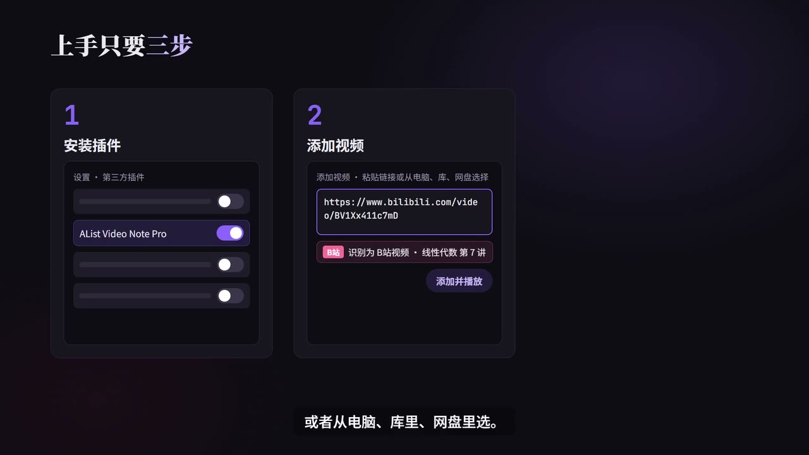

原视频 · 在线回看
点击后联网加载 B 站播放器；本地不下载整段视频。

原视频 · 在线回看
点击后联网加载 B 站播放器；本地不下载整段视频。
UP 主： 仙人球peyote 时长： 3 分 30 秒 链接： https://www.bilibili.com/video/BV1LDnv6mESx/ 阅读强度： quick
看课时，暂停截图、切换窗口粘贴，再拖动进度条找回位置，会把注意力从讲解带到整理动作上。可以在 Obsidian 里安装 AList Video Note Pro，打开播放列表，点“添加视频”，粘贴视频链接或分享口令，也可以从电脑本地文件或网盘中选择；再打开一篇笔记，就能开始播放。若要看 B 站高清视频，需要先在插件的 B 站视频设置中登录；使用网盘内容时，也要在网盘设置里登录相应账号。
播放到要记住的位置时，点播放器标题栏的时钟按钮，当前时间点会写进笔记。之后可以从三个具体场景回看：复习时回到老师讲题的那一秒；开会后找回拍板的原话；跟教程时定位到代码出现的画面。笔记中的时间点让我们从文字直接回到相应播放位置。
要留下画面时，点截图按钮，把板书、PPT 或代码画面放进笔记；在设置中配好文字识别后，还可以提取画面里的文字。需要反复练习的听力、指法或健身动作，可以打开片段循环播放。想保存重点，则点书签收藏并添加标签：复习时按错题、会议要点或灵感素材等标签筛选，能更快找到之前标出的片段。
也可以在设置中接入常用的 AI 服务，对着当前画面提问，让它解释画面里的公式、代码或图表。换设备时，先在电脑端的网盘设置中点“导出到库”，再在手机端从库中导入移动端。产品说明称，笔记以普通 Markdown 文件留在个人库中，网盘登录信息保存在设备端；实际数据流和同步范围仍取决于当前设置。
先把视频加入播放列表，再在观看时记下时间点、截图或收藏片段，复习时就能从标签和笔记回到对应画面。课程、会议和操作教程分别可以用时间点定位讲题、原话和代码。